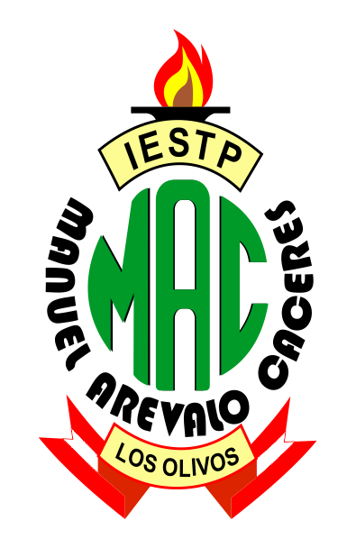
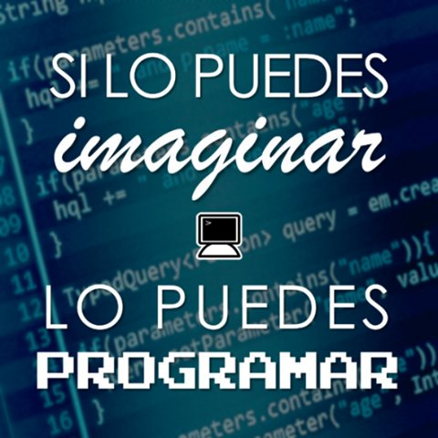

|  | Computación e Informática |
|---|
|  |
|---|
Como técnico en Computación e Informatica desarrollarás distintas soluciones necesarias para la automatización de la información con una sólida base científica y tecnológica acreditada internacionalmente. Además, realizarás actividades de alto nivel de abstracción, como análisis y diseño, y actividades de gran responsabilidad, como gestión de proyectos y tecnologías.
En empresas de desarrollo de software. Áreas de auditoria y control de sistemas de información. En corporaciones dedicadas a la instalación, mantenimiento y configuración de equipos de cómputo. En Organizaciones relacionadas con el sector de redes y comunicaciones. Implementación de plataformas web para comercio electrónico. Desarrollo independiente de soluciones informáticas.
Administración de Centros de Cómputo. Analista de Programador de Sistemas. Analista Diseñador Web.Diseñador Gráfico Publicitario. Especialista en Ensamblaje y Reparación de Computadoras. Especialista en Redes. Formación de Empresas de Servicios en Computación.
Analista de sistemas de información. Jefe de proyectos informáticos. Desarrollador de software. Auditor de sistemas de información. Docente.